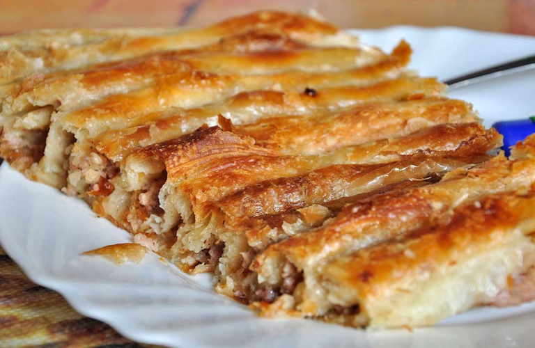

Burek

Description
This dish, of Turkish origin, is very popular in Croatia as a light meal
which people buy to eat on the go.
Burek is filo pastry filled with seasoned meat.
Ingredients
Filling:
- 150g/5.5oz lean beef
- 150g/5.5oz onion
- 40g/1.5oz oil
- Salt
- Pepper
Steps
- Fry the finely chopped onions and minced meat in oil.
- Add the salt and pepper.
- Grease a round baking tray and put a layer of pastry in it.
- Cover with a thin layer of filling and cover this with another layer of filo pastry which must be well coated in oil.
- Put another layer of filling and cover with pastry.
- When you have five or six layers, cover with filo pastry and bake at 200ºC/392ºF for half an hour.
- Cut in quarters and serve.